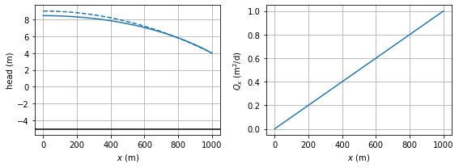
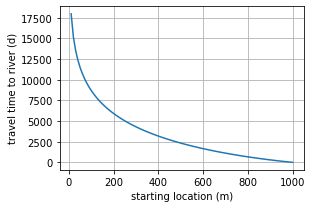
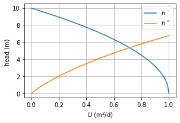
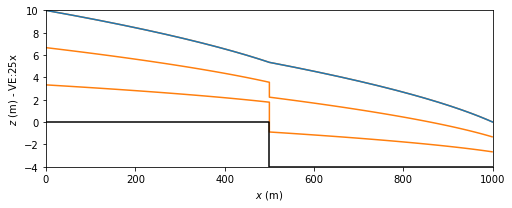
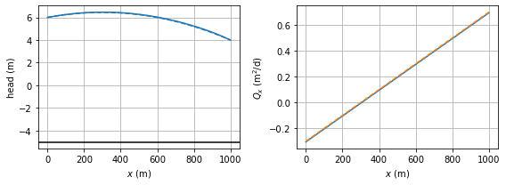
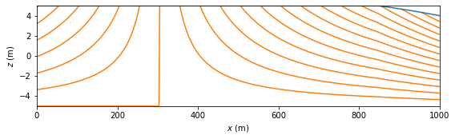

Steady one-dimensional flow with variable saturated thickness
Contents

The Python code provided below is from
Analytical Groundwater Modeling: Theory and Applications Using Python
by Mark Bakker and Vincent Post
ISBN 9781138029392
The book is published by CRC press and is available here.
This Notebook is provided under the MIT license.
© 2022 Mark Bakker and Vincent Post
Steady one-dimensional flow with variable saturated thickness#
%matplotlib inline
import numpy as np
import matplotlib.pyplot as plt
plt.rcParams["figure.figsize"] = (8, 3) # set default figure size
plt.rcParams["contour.negative_linestyle"] = 'solid' # set default line style
plt.rcParams["figure.autolayout"] = True # same at tight_layout after every plot
---------------------------------------------------------------------------
ModuleNotFoundError Traceback (most recent call last)
Input In [1], in <cell line: 1>()
----> 1 get_ipython().run_line_magic('matplotlib', 'inline')
2 import numpy as np
3 import matplotlib.pyplot as plt
File ~/anaconda3/envs/jb/lib/python3.10/site-packages/IPython/core/interactiveshell.py:2305, in InteractiveShell.run_line_magic(self, magic_name, line, _stack_depth)
2303 kwargs['local_ns'] = self.get_local_scope(stack_depth)
2304 with self.builtin_trap:
-> 2305 result = fn(*args, **kwargs)
2306 return result
File ~/anaconda3/envs/jb/lib/python3.10/site-packages/IPython/core/magics/pylab.py:99, in PylabMagics.matplotlib(self, line)
97 print("Available matplotlib backends: %s" % backends_list)
98 else:
---> 99 gui, backend = self.shell.enable_matplotlib(args.gui.lower() if isinstance(args.gui, str) else args.gui)
100 self._show_matplotlib_backend(args.gui, backend)
File ~/anaconda3/envs/jb/lib/python3.10/site-packages/IPython/core/interactiveshell.py:3478, in InteractiveShell.enable_matplotlib(self, gui)
3457 def enable_matplotlib(self, gui=None):
3458 """Enable interactive matplotlib and inline figure support.
3459
3460 This takes the following steps:
(...)
3476 display figures inline.
3477 """
-> 3478 from matplotlib_inline.backend_inline import configure_inline_support
3480 from IPython.core import pylabtools as pt
3481 gui, backend = pt.find_gui_and_backend(gui, self.pylab_gui_select)
File ~/anaconda3/envs/jb/lib/python3.10/site-packages/matplotlib_inline/backend_inline.py:6, in <module>
1 """A matplotlib backend for publishing figures via display_data"""
3 # Copyright (c) IPython Development Team.
4 # Distributed under the terms of the BSD 3-Clause License.
----> 6 import matplotlib
7 from matplotlib.backends.backend_agg import ( # noqa
8 new_figure_manager,
9 FigureCanvasAgg,
10 new_figure_manager_given_figure,
11 )
12 from matplotlib import colors
ModuleNotFoundError: No module named 'matplotlib'
Areal recharge between an impermeable boundary and a river#

# parameters
L = 1000 # aquifer length, m
H = 10 # aquifer thickness, m
zb = -5 # aquifer bottom, m
k = 10 # hydraulic conductivity, m/d
n = 0.3 # porosity, -
hL = 4 # specified head at the right boundary, m
N = 0.001 # areal recharge, m/d
# solution
phiL = 0.5 * k * (hL - zb) ** 2
x = np.linspace(0, L, 100)
phi = -N / 2 * (x ** 2 - L ** 2) + phiL
h = zb + np.sqrt(2 * phi / k)
happrox = -N / (2 * k * H) * (x ** 2 - L ** 2) + hL
Qx = N * x
# basic plot
plt.subplot(121)
plt.plot(x, h)
plt.plot(x, happrox, 'C0--')
plt.axhline(zb, color='k')
plt.grid()
plt.xlabel('$x$ (m)')
plt.ylabel('head (m)')
plt.subplot(122)
plt.plot(x, Qx)
plt.grid()
plt.xlabel('$x$ (m)')
plt.ylabel('$Q_x$ (m$^2$/d)');

print(f'flux to left river: {-Qx[0]:.3f} m^2/d')
print(f'flux to right river: {Qx[-1]:.3f} m^2/d')
flux to left river: -0.000 m^2/d
flux to right river: 1.000 m^2/d
# solution
psi = np.zeros((2, len(x)))
psi[1] = -Qx
xg = np.zeros_like(psi)
xg[:] = x
zg = np.zeros_like(psi)
zg[0] = zb
zg[1] = h
# basic streamline plot
plt.subplot(111, aspect=25)
plt.contour(xg, zg, psi, 10, colors='C1', linestyles='-')
plt.plot(x, h, 'k')
plt.xlabel('$x$ (m)')
plt.ylabel('$z$ (m)');

# solution
def integral(x):
a = 2 * phiL / N + L ** 2
return np.sqrt(a - x ** 2) - np.sqrt(a) * \
np.arctanh(np.sqrt(a - x ** 2) / np.sqrt(a))
def traveltime(x):
return n / np.sqrt(N * k) * (integral(L) - integral(x))
x = np.linspace(10, L, 100)
trtime = traveltime(x)
# basic travel time plot
plt.subplot(121)
plt.plot(x, trtime)
plt.xlabel('starting location (m)')
plt.ylabel('travel time to river (d)')
plt.grid();

Flow over a step in the aquifer base#

# parameters
k = 10 # hydraulic conductivity, m/d
z0 = 0 # base elevation left section, m
z1 = -4 # base elevation right section, m
L0 = 500 # length of left section, m
L1 = 500 # length of right section, m
L = L0 + L1 # total distance between rivers, m
h0 = 10 # specified head at the left boundary, m
hL = 0 # specified head at the right boundary, m
# solution
phi0 = 0.5 * k * (h0 - z0)**2
phiL = 0.5 * k * (hL - z1)**2
def hmin(U, L0=L0, z0=z0, phi0=phi0):
return np.sqrt(2 * (-U * L0 + phi0) / k) + z0
def hplus(U, L1=L1, z1=z1, phiL=phiL):
return np.sqrt(2 * (U * L1 + phiL) / k) + z1
# basic plot two conditions
U = np.linspace(0, 1, 100)
plt.subplot(121)
plt.plot(U, hmin(U), label='$h^-$')
plt.plot(U, hplus(U), label='$h^+$')
plt.legend()
plt.xlabel('$U$ (m$^2$/d)')
plt.ylabel('head (m) ')
plt.grid();

from scipy.optimize import fsolve
def hdiff(U):
return hmin(U) - hplus(U)
U = fsolve(hdiff, 0.7)[0] # first value of array returned by fsolve
print(f'U: {U:0.4f} m^2/d')
U: 0.7139 m^2/d
# solution
x = np.hstack((np.linspace(0, L0 - 1e-6, 100), np.linspace(L0 + 1e-6, L, 100)))
phi = np.empty_like(x)
phi[x < L0] = -U * x[x < L0] + phi0
phi[x >= L0] = -U * (x[x >= L0] - L) + phiL
h = np.zeros_like(phi)
h[x < L0] = np.sqrt(2 * phi[x < L0] / k) + z0
h[x >= L0] = np.sqrt(2 * phi[x >= L0] / k) + z1
#
psi = np.zeros((2, len(x)))
psi[1] = -U
xg = np.zeros_like(psi)
xg[:] = x
zg = np.zeros_like(xg)
zg[0, :100] = z0
zg[0, 100:] = z1
zg[1] = h
# basic streamline plot
plt.subplot(111, aspect=25)
plt.contour(xg, zg, psi, np.linspace(-U, 0, 4), colors='C1', linestyles='-')
plt.plot(x, h, 'C0')
plt.plot(x, zg[0], 'k')
plt.xlabel('$x$ (m)')
plt.ylabel(f'$z$ (m) - VE:25x');

Combined confined/unconfined flow with areal recharge#

# parameters
L = 1000 # aquifer length, m
H = 10 # aquifer thickness, m
zb = -5 # aquifer base, m
k = 10 # hydraulic conductivity, m/d
h0 = 6 # specified head at the left boundary, m
hL = 4 # specified head at the right boundary, m
N = 0.001 # areal recharge, m/d
# solution
C = -0.5 * k * H**2 - k * H * zb
phi0 = k * H * h0 + C
phi1 = 0.5 * k * (hL - zb)**2
phit = 0.5 * k * H**2 # transition potential
x = np.linspace(0, L, 400)
phi = -N / 2 * (x ** 2 - L * x) + (phi1 - phi0) * x / L + phi0
h = np.zeros_like(phi)
h[phi >= phit] = (phi[phi > phit] - C) / (k * H)
h[phi <= phit] = zb + np.sqrt(2 * phi[phi <= phit] / k)
Qx = N * (x - L / 2) - (phi1 - phi0) / L
happrox = -N / (2 * k * H) * (x ** 2 - L * x) + (hL - h0) * x / L + h0
Qxapprox = N * (x - L / 2) - k * H * (hL - h0) / L
# basic plot
plt.subplot(121)
plt.plot(x, h)
plt.plot(x, happrox, 'C0--')
plt.axhline(zb, color='k')
plt.grid()
plt.xlabel('$x$ (m)')
plt.ylabel('head (m)')
plt.subplot(122)
plt.plot(x, Qx)
plt.plot(x, Qxapprox, 'C1--')
plt.grid()
plt.xlabel('$x$ (m)')
plt.ylabel('$Q_x$ (m$^2$/d)');

print(f'flux to left river: {-Qx[0]:.3f} m^2/d')
print(f'flux to right river: {Qx[-1]:.3f} m^2/d')
flux to left river: 0.305 m^2/d
flux to right river: 0.695 m^2/d
# solution
psi = np.zeros((2, len(x)))
psi[1] = -Qx
xg = np.zeros_like(psi)
xg[:] = x
zg = np.zeros_like(psi)
zg[0] = zb
zg[1] = H + zb
zg[1, h < H + zb] = h[h < H + zb]
# basic streamline plot
plt.subplot(111, aspect=25)
plt.contour(xg, zg, psi, 20, colors='C1', linestyles='-')
plt.plot(xg[0], zg[1], 'C0')
plt.xlabel('$x$ (m)')
plt.ylabel('$z$ (m)');
